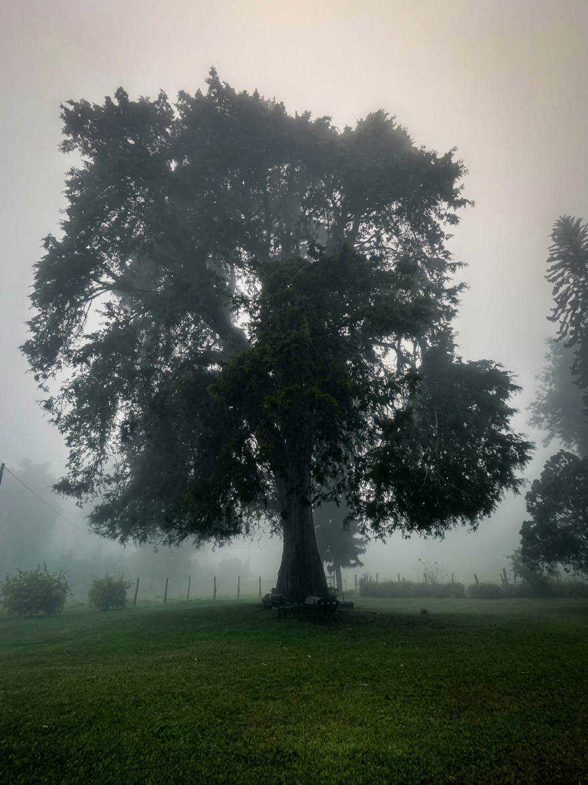
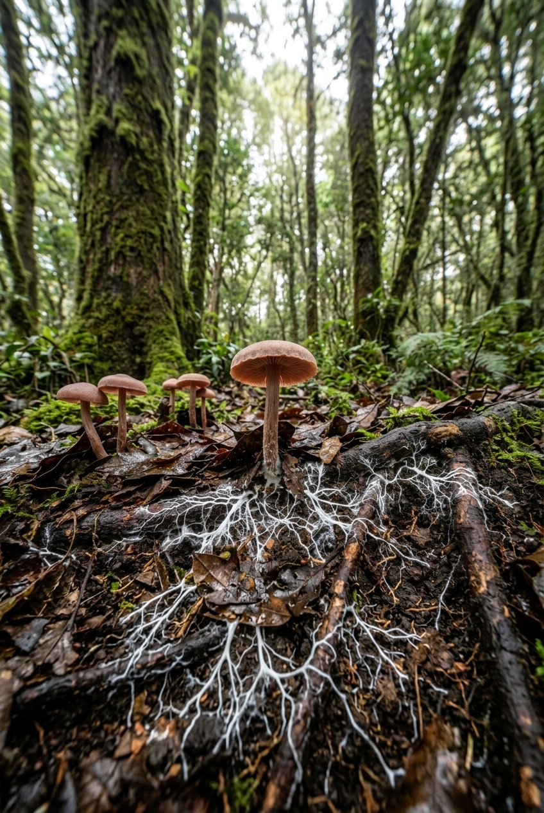
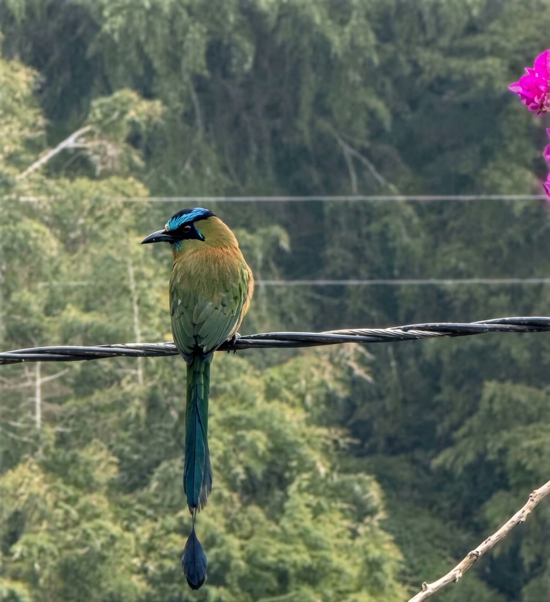
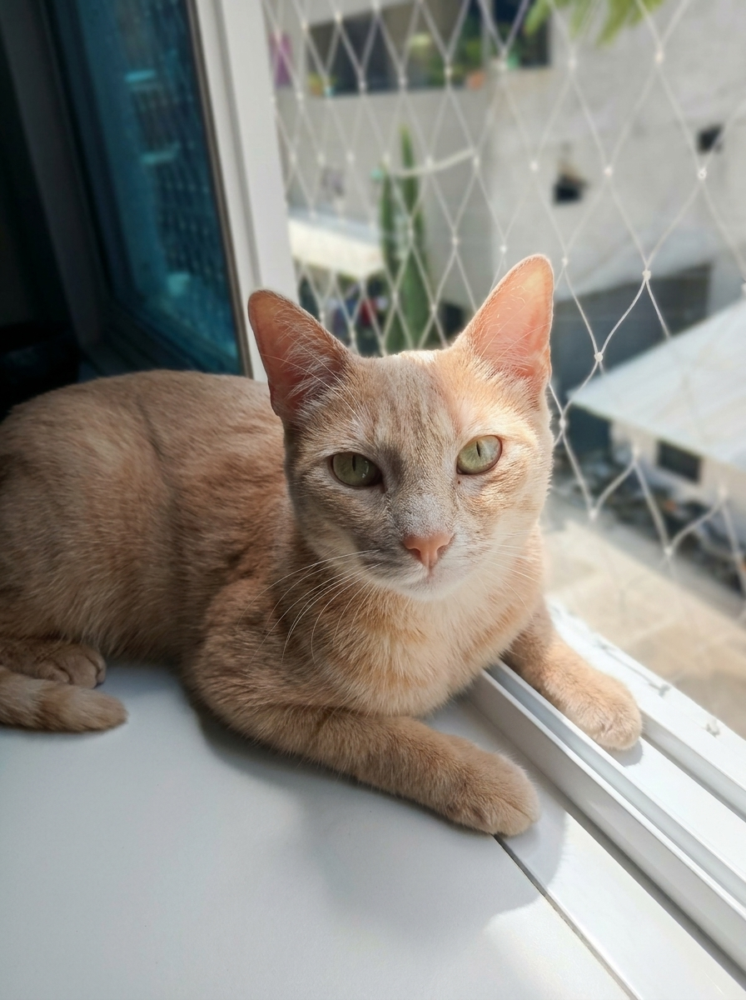

Los 4 Maestros del Territorio / Ecos de la Ladera y la Niebla
Un archivo pedagógico para desplazar la mirada antropocéntrica en la ingeniería. Explora las temporalidades del árbol, las redes del hongo, la movilidad del animal y los intangibles de la mística.
- Maria Alejandra Angulo Franco
- Isabela Jiménez Ruiz
- Carlos Andrés Monsalve Benítez
- Carlos David Pérez Gallego
- Rodrigo Nicolás Trujillo Molina
Toca o haz clic en cualquier carta para girarla

[Coloca la foto real arbol.jpg en esta carpeta]San Félix, Cordillera Central
THE TREE
Viejo Ciprés y la Niebla
Cupressus lusitanica
"No busques claridad en el horizonte cuando el camino exige que mires hacia adentro."
1. ¿Quién es este maestro?
Ubicado en medio de una terraza en las vertientes occidentales de la cordillera central de los Andes, es un gigante de unos 25 metros de altura que, con su enorme e imponente tronco, da solidez por su rectitud, cilíndrico y robusto. Está en su madurez y su corteza de color marrón se fisura con el pasar de los años. Según la leyenda tiene más de 110 años. Produce pequeños conos esféricos leñosos de 1 a 2 cm de diámetro. Es el guardián del predio. Relata la leyenda que es el castillo de los nomos de San Félix y la casa de muchas bifloras; conversa con pájaros colibríes, cucaracheros, mirlas, barranqueros y en las noches dialoga sobre los sueños de la vereda con el currucutú chobila.
2. ¿Qué hace que normalmente no vemos?
A través de sus diminutas hojas escamosas, actúa como un atrapanieblas biológico que "cosecha" agua de la bruma andina y regula la humedad de la ladera. Sin embargo, sus acículas caídas acidifican el suelo e inhiben el crecimiento del sotobosque nativo, demostrando la tensión entre su refugio afectivo y su impacto en la química del suelo.
3. Concepto del Curso
Temporalidades e Hibridación Territorial: Representa la escala del "tiempo profundo del árbol" frente a la aceleración de la infraestructura. Muestra cómo una especie exótica se convierte en patrimonio afectivo e histórico de la vereda.
4. ¿Qué nos enseña?
El viejo ciprés no lucha contra la bruma; comprende que la niebla no es pérdida de visión, sino un manto de protección e introyección. Invita a conectar tus 3 mundos: la raíz (inconsciente), el tronco (cuerpo físico) y la copa (espíritu).
"¿Qué temporalidades de la memoria y del paisaje estamos destruyendo al evaluar el territorio únicamente por su rendimiento a corto plazo?"

[Coloca la foto real hongo.jpg en esta carpeta]Suelo del Robledal / San Félix
THE MUSHROOM
Ectomicorriza del Robledal
Cortinarius / Laccaria sp.
"Lo que sostiene la vida en la superficie depende de las alianzas invisibles del sotobosque."
1. ¿Quién es este maestro?
Silencioso y fértil, habita la húmeda hojarasca de los robledales andinos en San Félix. Lo que emerge en la superficie como una pequeña seta es tan solo el fruto efímero de un ser infinitamente más vasto que se extiende bajo la tierra húmeda del bosque montano.
2. ¿Qué hace que normalmente no vemos?
Teje la red micorrízica subterránea, una red de filamentos que abraza las raíces de los robles. Transfiere agua y nutrientes entre árboles ancianos y plántulas jóvenes, funcionando como una red comunitaria de redistribución de recursos.
3. Concepto del Curso
Metabolismo Territorial e Interdependencia: Desmonta la noción lineal de "residuo" en la ingeniería. Muestra cómo la materia en descomposición es el origen de nuevos ciclos vitales no antropocéntricos.
4. ¿Qué nos enseña?
Ninguna estructura sobrevive sola. La verdadera fortaleza de un ecosistema reside en la densidad y reciprocidad de sus alianzas subterráneas e invisibles. Nos enseña la lección de la cooperación silenciosa frente al individualismo.
"¿Qué redes invisibles y ciclos metabólicos de materia alteraremos aunque no aparezcan representados en los planos de la obra?"

[Coloca la foto real animal.jpg en esta carpeta]Valle de Aburrá / San Félix
THE ANIMAL
El Barranquero (Soledad)
Momotus aequatorialis
"Las fronteras de concreto no detienen el vuelo de quien habita el territorio sin mapas humanos."
1. ¿Quién es este maestro?
Es el Barranquero (*Momotus aequatorialis*), conocido como Soledad o Relojero. Ave majestuosa de los bosques andinos del Valle de Aburrá y San Félix. Con su diadema azul turquesa vibrante y su cola terminada en raquetas, es el centinela multicolor de los barrancos.
2. ¿Qué hace que normalmente no vemos?
Dispersa semillas nativas y moldea el suelo al excavar galerías en barrancos de tierra para anidar. Adapta sus trayectorias posándose sobre cables de alta tensión, reconfigurando sus mapas de vuelo ante las infraestructuras humanas.
3. Concepto del Curso
Agencia No Humana y Corredores Biológicos: Muestra la soberanía espacial de la fauna que ignora los límites catastrales. Invita a pensar en la conectividad ecológica activa frente al diseño urbano antropocéntrico.
4. ¿Qué nos enseña?
Nos enseña sobre la solitud contemplativa y la resiliencia territorial. Su canto entre los cables nos recuerda que los proyectos no ocurren en un espacio vacío, sino sobre autopistas de vida que deben ser respetadas.
"¿Qué corredores biológicos y trayectorias de vuelo desaparecen cuando asumimos que las únicas fronteras que importan son las del diseño humano?"

[Coloca la foto real mistica.jpg en esta carpeta]Lili en el Borde de la Ventana
THE MYSTIC
Lili — La Gata Mística
Felis catus
"Existen verdades del territorio que no se leen con instrumentos, sino con reverencia, intuición y afecto."
1. ¿Quién es este maestro?
Lili es una gata doméstica que habita el borde de la ventana y el umbral del hogar. Representa un vínculo profundo y afectivo que nos conecta con la serenidad de la vida doméstica y la fuerza pulsante del mundo natural.
2. ¿Qué hace que normalmente no vemos?
Habita el espacio desde una sensibilidad no humana, detectando sutilezas del viento y vibraciones invisibles. Devela que existe una dimensión mística y ancestral en la convivencia diaria que la razón instrumental suele dejar fuera del mapa.
3. Concepto del Curso
Ontología Plural y Cartografía Afectiva: Cuestiona el sesgo antropocéntrico que reduce el territorio a un simple objeto de intervención o cálculo. Entiende que las geografías también son afectivas y simbólicas.
4. ¿Qué nos enseña?
Lili nos enseña a valorar lo intangible y a cultivar la intuición frente a la rigidez técnica. Demuestra que el territorio es también refugio, misterio y relación.
"¿Qué intangibles culturales, afectivos o sagrados ignoramos al reducir una decisión territorial a un cálculo puramente técnico y cuantificable?"
Consulta Oracular del Territorio
Formula un dilema territorial o de ingeniería. La baraja responderá desde la perspectiva de los seres más-que-humanos para desplazar la mirada antropocéntrica.
Dictamen Oracular Integrado
Lectura para la solución del dilema ambiental